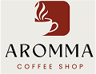
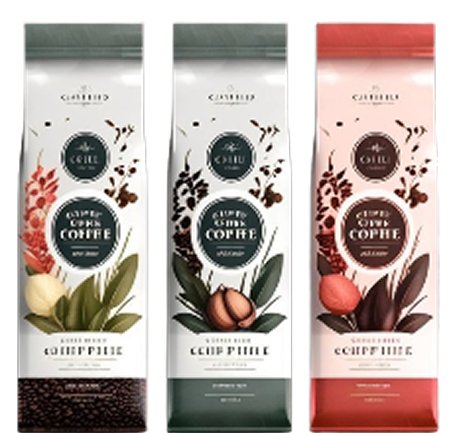

BEBIDAS FAVORITAS
"CADA GRANO, UNA HISTORIA; CADA TAZA, UNA EXPERENCIA INOLVIDABLE
Seleccionamos solo los mejores granos de café de origen sostenible, cuidadosamente cultivados en las mejoras regiones cafeteras del mundo.
